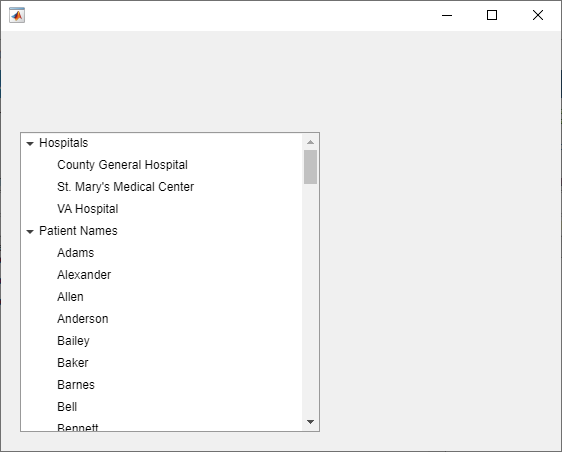

Improve App Startup Time
There are multiple techniques that you can use to improve the performance and responsiveness of apps that you create. For an overview of these techniques, see Improve App Performance.
To improve the startup time of your app, one technique is to initialize and perform calculations for only the parts of your app that are visible at startup. Two common scenarios in which this technique can have a significant benefit are when your app contains multiple tabs and when your app contains a tree with many nodes.
Improve Startup Time in Apps with Multiple Tabs
In apps with multiple tabs, only the content in a single tab is visible when the app first starts up. MATLAB® optimizes startup time in apps with multiple tabs by prioritizing creating the content in the visible tab when the app first runs.
If you have a large app with many UI components, you can improve the startup time of your app by limiting the number of components that are in the visible tab. For example, consider creating a simple summary tab for your app that is visible when the app starts up. When a user runs the app, MATLAB prioritizes displaying the content in the summary tab, which allows the user to view and interact with the app sooner. You can further optimize your app layout by limiting the number of components in each tab, and instead using a larger number of tabs to group related app elements. This improves app responsiveness when a user switches between tabs.
Before R2022b, instead reduce startup time by populating content in tabs as the app user switches to them. For details, see Improve App Startup Time (R2022a) (R2022a).
Improve Startup Time in Apps with Large Trees
When you create a tree UI component with many nodes, you can provide a
more responsive experience for the app user by creating child nodes only after a parent node
is expanded. Do this by writing a NodeExpandedFcn callback for the
tree, and create the nodes in the callback function.
For example, create an app that displays patient names and hospitals in a tree. Create a
file named patientTreeApp.m in your current folder and define a function
named patientTreeApp. Within the function, perform these steps:
Read in the sample patient data and store it in a table variable named
T.Create a figure window, and then create a tree in the figure.
Populate the tree with two top-level nodes. These nodes will have child nodes with hospital names and patient names from the data. Use the
NodeDataproperty to store whether the node has been expanded by a user.For each of the top-level nodes, create one child node with the text
"Loading...". This placeholder child node allows the top-level node to be expanded by the app user. It also provides the app user with immediate feedback when they first expand a node.Assign the
createNodesfunction to theNodeExpandedFcncallback property of the tree. Pass the patient table data as an input to the function. MATLAB executes thecreateNodesfunction whenever the app user expands a node of the tree.
function patientTreeApp T = readtable("patients"); fig = uifigure; tr = uitree(fig,"Position",[20 20 300 300]); hospitalnode = uitreenode(tr,"Text","Hospitals","NodeData",false); namenode = uitreenode(tr,"Text","Patient Names","NodeData",false); for k = 1:length(tr.Children) node = tr.Children(k); uitreenode(node,"Text","Loading..."); end tr.NodeExpandedFcn = {@createNodes,T}; end
In the same file, define the createNodes callback function. The
function input arguments are the callback source component and event data that MATLAB passes to callback functions and the patient data. Within the function, store
the node that was expanded in a variable named parent. If this is the
first time a user has expanded the node, perform these steps:
Delete the placeholder child node.
Depending on which node was expanded, store either the hospital names or the patient names in a variable named
children.For each of the names stored in
children, create a tree node whose text is that name, and then parent it to the expanded node.Update the
NodeDataproperty to indicate that the node has been expanded.
function createNodes(src,event,T) parent = event.Node; if ~parent.NodeData delete(parent.Children) switch parent.Text case "Hospitals" children = categories(categorical(T.Location)); case "Patient Names" children = categories(categorical(T.LastName)); end for k = 1:length(children) text = children{k}; uitreenode(parent,"Text",text); end parent.NodeData = true; end end
Call the patientTreeApp function from the command line to run the
app.
patientTreeApp
Expand the Hospitals and Patient Names nodes to
generate and display their children.
